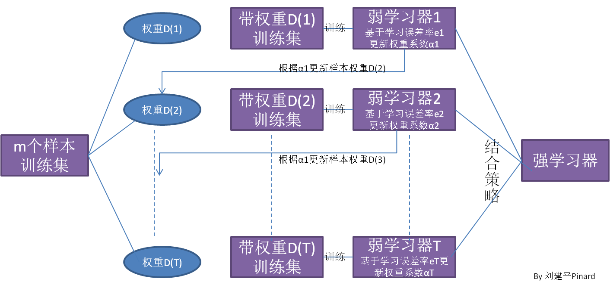
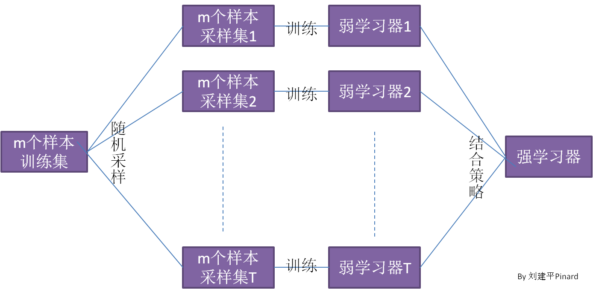
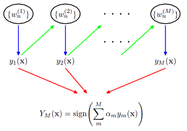
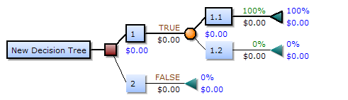
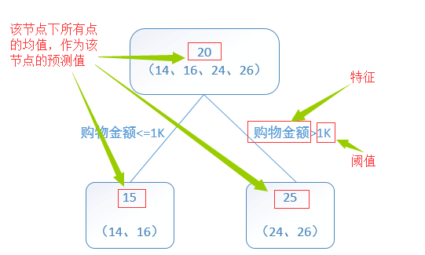
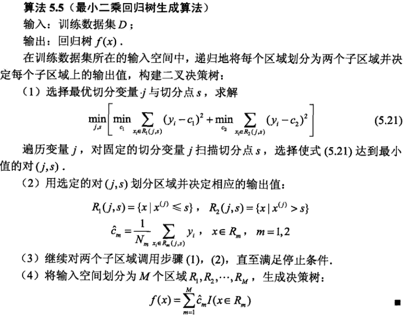
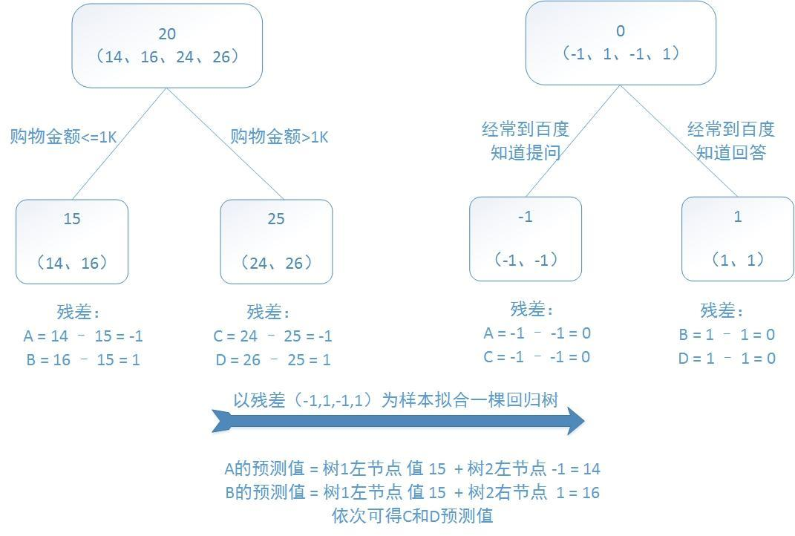
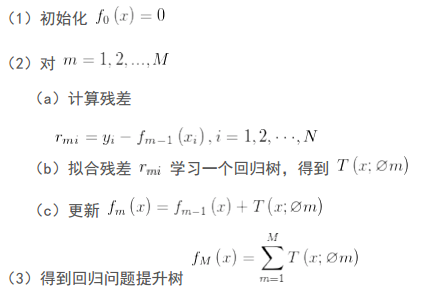
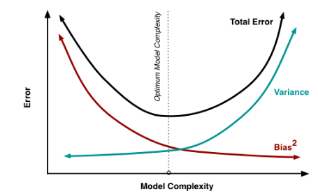

GBDT学习笔记
学习任何东西都可以按照3W的框架进行，容器技术也是一样，先回答 What、Why 和 How 这三个问题。
参考：
video：https://www.youtube.com/watch?v=IXZKgIsZRm0&ab_channel=PyData
在说GBDT前，我们先说下它的俩前缀Gradient Boosting：
- Boosting: 这是一种迭代算法，每一次训练都是在前面已有模型的预测基础上进行。
最简单地说，先训练一个初始模型，对比真实值和预测值的残差；用残差再训练一个模型，再计算残差；再训练……。这样，每一个模型都专注于修正前面模型最不给力的效果方面。
于是，通过这种方式联合多个弱分类器，就能得到一个强分类器。 - Gradient: 梯度。对于单个变量来说，就是一阶导数。
前面Boosting要计算残差，方法就很多了，你可以直接相减，也可以定义个函数。这里Gradient就是说用梯度来计算残差。
所以说Gradient Boosting是一种算法框架，它是用Grdient计算残差的Boosting过程，而GBDT只是用决策树来训练的一种具体实现。
概念定义 what
ensemble learning（集成学习）
从下图，我们可以对集成学习的思想做一个概括。对于训练集数据，我们通过训练若干个个体学习器，通过一定的结合策略，就可以最终形成一个强学习器，以达到博采众长的目的。
也就是说，集成学习有两个主要的问题需要解决，
第一是如何得到若干个个体学习器，
第二是如何选择一种结合策略，将这些个体学习器集合成一个强学习器。
集成学习之个体学习器
如何得到若干个个体学习器？ 这里我们有两种选择。
- 第一种就是所有的个体学习器都是一个种类的，或者说是
同质的。比如都是决策树个体学习器，或者都是神经网络个体学习器。
同质个体学习器使用最多的模型是CART决策树和神经网络。
同质个体学习器按照个体学习器之间是否存在依赖关系可以分为两类，- 第一个是个体学习器之间存在强依赖关系，一系列个体学习器基本都需要串行生成，代表算法是
boosting系列算法， - 第二个是个体学习器之间不存在强依赖关系，一系列个体学习器可以并行生成，代表算法是
bagging和随机森林（Random Forest）系列算法。
- 第一个是个体学习器之间存在强依赖关系，一系列个体学习器基本都需要串行生成，代表算法是
- 第二种是所有的个体学习器不全是一个种类的，或者说是
异质的。比如我们有一个分类问题，对训练集采用支持向量机个体学习器，逻辑回归个体学习器和朴素贝叶斯个体学习器来学习，再通过某种结合策略来确定最终的分类强学习器。
目前来说，同质个体学习器的应用是最广泛的，一般我们常说的集成学习的方法都是指的同质个体学习器。
集成学习之boosting
Boosting 是迭代算法，每一次迭代都根据上一次迭代的预测结果对样本进行加权，所以随着迭代不断进行，误差会越来越小，所以模型的 bias 会不断降低。这种算法无法并行，例子比如 Adaptive Boosting.

从图中可以看出，Boosting算法的工作机制
- 从训练集用
初始权重训练出一个弱学习器1，根据弱学习的学习误差率表现来更新训练样本的权重，使得之前弱学习器1学习误差率高的训练样本点的权重变高，使得这些误差率高的点在后面的弱学习器2中得到更多的重视； - 基于调整权重后的训练集来训练弱学习器2；
- 如此重复进行，直到弱学习器数达到事先指定的数目T；
- 最终将这T个弱学习器通过集合策略进行整合，得到最终的强学习器。
Boosting系列算法里最著名算法主要有：
- AdaBoost算法
- 提升树(boosting tree)系列算法。提升树系列算法里面应用最广泛的是梯度提升树(Gradient Boosting Tree)。
Boosting算法的4个具体的问题
只要是boosting大家族的算法，都要解决这4个问题。
- 如何计算学习误差率e?
- 如何得到弱学习器权重系数α?
- 如何更新样本权重D?
- 使用何种结合策略？
集成学习之bagging
Bagging 是 Bootstrap Aggregating 的简称，意思就是再取样 (Bootstrap) 然后在每个样本上训练出来的模型取平均，所以是降低模型的 variance， 比如 Random Forest 这种先天并行的算法都有这个效果。
Bagging的算法原理和 boosting不同，它的弱学习器之间没有依赖关系，可以并行生成，我们可以用一张图做一个概括如下：

从上图可以看出，bagging的个体弱学习器的训练集是通过随机采样得到的。通过T次的随机采样，我们就可以得到T个采样集，对于这T个采样集，我们可以分别独立的训练出T个弱学习器，再对这T个弱学习器通过集合策略来得到最终的强学习器。
对于这里的随机采样有必要做进一步的介绍，这里一般采用的是自助采样法（Bootstap sampling）,即对于m个样本的原始训练集，我们每次先随机采集一个样本放入采样集，接着把该样本放回，也就是说下次采样时该样本仍有可能被采集到，这样采集m次，最终可以得到m个样本的采样集，由于是随机采样，这样每次的采样集是和原始训练集不同的，和其他采样集也是不同的，这样得到多个不同的弱学习器。
随机森林是bagging的一个特化进阶版，所谓的特化是因为随机森林的弱学习器都是决策树。所谓的进阶是随机森林在bagging的样本随机采样基础上，又加上了特征的随机选择，其基本思想没有脱离bagging的范畴。
GBDT是什么？
GBDT有很多简称，有
- GBT（Gradient Boosting Tree）,
- GTB（Gradient Tree Boosting ），
- GBRT（Gradient Boosting Regression Tree）,
MART(Multiple Additive Regression Tree)，
其实都是指的同一种算法，本文统一简称GBDT（Gradient Boosting Decision Tree）。GBDT在BAT大厂中也有广泛的应用，假如要选择3个最重要的机器学习算法的话，个人认为GBDT应该占一席之地。
GBDT 使用的弱分类器就是 Decision Tree，而融合的方法叫做 Gradient Boosting。
Gradient 梯度
梯度的提出只为回答一个问题
函数在变量空间的某一点处，沿着哪一个方向有最大的变化率？
梯度定义grad
函数在某一点的梯度是个向量，它的方向与函数在这点取得最大方向导数的方向一致，而它的模为方向导数的最大值。
函数在一点的梯度方向与等值线在这点的一个法线方向相同，它的指向为从数值较低的等值线指向数值较高的等值线，梯度的模就等于函数在这个法线方向的方向导数；
—-《同济大学高等数学下册》p49
这里注意三点：
- 梯度是一个向量，即有方向有大小；
- 梯度的方向是最大方向导数的方向；
- 梯度的值是最大方向导数的值。
梯度即函数在某一点最大的方向导数，函数沿梯度方向函数有最大的变化率。
梯度的应用
一个标量场 数量变化最快的方向就是梯度方向，
那么我们可以用梯度来优化损失函数，如梯度下降求损失函数的最小值…
形象理解就是：山坡某个点坡度最陡的方向
梯度本质就是一个向量。一个曲面上某点(x，y)，梯度是由该点偏导数得出的向量(a，b)。
可以类比成：你站在该点，按照向量所指的方向上山最陡。
导数
导数：被定义为一个极限，其意义就是变化率
微分：是一个线性函数，其意义就是变化的具体数值
切线：有了导数之后就可以被确定下来了
- 几何意义：f(x)在点x0处的导数为改点切线的斜率
- 物理意义：动点在某时刻t0的瞬时速度（极限值）
方向导数
方向导数就是一个曲面上的某点(x，y)，从该点起始沿特定方向函数的变化率。
可以类比成：有一个山峰，你站在山顶观察，北坡较陡南坡较缓。
Boosting
- Boosting是一族可将弱学习器提升为强学习器的算法，属于集成学习（ensemble learning）的范畴；
- Boosting方法基于这样一种思想：
对于一个复杂任务来说，将多个专家的判定进行适当的综合得出的判断，要比其中任何一个专家单独的判断好。
通俗理解。
- “三个臭皮匠顶个诸葛亮”，一堆弱分类器的组合就可以成为一个强分类器；
- “知错能改，善莫大焉”，不断地在错误中学习，迭代来降低犯错概率；
弱学习算法和强学习算法
要理解好Boosting的思想，首先需从弱学习算法和强学习算法来引入：
- 强学习算法：存在一个多项式时间的学习算法以识别一组概念，且识别的正确率很高；
- 弱学习算法：识别一组概念的正确率仅比随机猜测略好；
Kearns & Valiant证明了弱学习算法与强学习算法的等价问题，
如果两者等价，只需找到一个比随机猜测略好的学习算法，就可以将其提升为强学习算法。
那么是怎么实现“知错就改”的呢？
Boosting算法，通过一系列的迭代来优化分类结果，每迭代一次引入一个弱分类器，来克服现在已经存在的弱分类器组合的shortcomings；
- 在Adaboost算法中，这个shortcomings的表征就是权值高的样本点；
- 而在Gradient Boosting算法中,这个shortcomings的表征就是梯度；
无论是Adaboost还是Gradient Boosting，都是通过这个shortcomings来告诉学习器怎么去提升模型，也就是“Boosting”这个名字的由来吧
Adaboost 算法

前一个学习器改变权重w，然后再经过下一个学习器，最终所有的学习器共同组成最后的学习器。
如果一个样本在前一个学习器中被误分，那么它所对应的权重会被加重，相应地，被正确分类的样本的权重会降低。
Gradient boosting梯度提升
梯度提升（Gradient boosting）是一种用于回归、分类和排序任务的机器学习技术，属于Boosting算法族的一部分。
梯度提升同其他boosting方法一样，通过集成（ensemble）多个弱学习器，通常是决策树，来构建最终的预测模型。
- Gradient Boosting 在迭代的时候选择梯度下降的方向来保证最后的结果最好。
- 损失函数用来描述模型的“靠谱”程度，假设模型没有过拟合，损失函数越大，模型的错误率越高
- 如果我们的模型能够让损失函数持续的下降，则说明我们的模型在不停的改进，而最好的方式就是让损失函数在其梯度方向上下降。
Gradient Boosting是在boosting思想下的一种函数（也可以说是模型）的优化的方法，首先将函数分解为可加的形式（其实所有的函数都是可加的，只是是否好放在这个框架中，以及最终的效果如何）。然后进行m次迭代，通过使得损失函数在梯度方向上减少，最终得到一个优秀的模型。值得一提的是，每次模型在梯度方向上的减少的部分，可以认为是一个“小”的或者“弱”的模型，最终我们会通过加权(也就是每次在梯度方向上下降的距离）的方式将这些“弱”的模型合并起来，形成一个更好的模型。
Decision Tree基本思想
DT定义
- 机器学习中，决策树是一个预测模型，数据挖掘中决策树是一种经常要用到的技术，可以用于分析数据，同样也可以用来作预测；
- 他代表的是对象属性与对象值之间的一种映射关系。树中每个节点表示某个对象，而每个分叉路径则代表某个可能的属性值，而每个叶节点则对应从根节点到该叶节点所经历的路径所表示的对象的值。
- 决策树仅有单一输出，若欲有复数输出，可以建立独立的决策树以处理不同输出。
从数据产生决策树的机器学习技术叫做决策树学习，通俗说就是决策树。
一个决策树包含三种类型的节点：
- 决策节点：通常用矩形框来表示
- 机会节点：通常用圆圈来表示
- 终结点：通常用三角形来表示

决策树学习也是数据挖掘中一个普通的方法。在这里，每个决策树都表述了一种树型结构，它由它的分支来对该类型的对象依靠属性进行分类。
每个决策树可以依靠对源数据库的分割进行数据测试。这个过程可以递归式的对树进行修剪。 当不能再进行分割或一个单独的类可以被应用于某一分支时，递归过程就完成了。
另外，随机森林分类器将许多决策树结合起来以提升分类的正确率。
决策树同时也可以依靠计算条件概率来构造。
分类树/回归树
分类树
以C4.5分类树为例，C4.5分类树在每次分枝时，
是穷举每一个feature的每一个阈值，
找到使得按照feature<=阈值，和feature>阈值分成的两个分枝的熵最大的阈值
(熵最大的概念可理解成尽可能每个分枝的男女比例都远离1:1)，
按照该标准分枝得到两个新节点，用同样方法继续分枝直到所有人都被分入性别唯一的叶子节点，
或达到预设的终止条件，
若最终叶子节点中的性别不唯一，则以多数人的性别作为该叶子节点的性别。
总结：
分类树使用信息增益或增益比率来划分节点；
每个节点样本的类别情况投票决定测试样本的类别。
回归树
回归树总体流程也是类似，
区别在于，回归树的每个节点（不一定是叶子节点）都会得一个预测值，
以年龄为例，该预测值等于属于这个节点的所有人年龄的平均值。
分枝时穷举每一个feature的每个阈值找最好的分割点，但衡量最好的标准不再是最大熵，而是最小化均方差即(每个人的年龄-预测年龄)^2 的总和 / N。
也就是被预测出错的人数越多，错的越离谱，均方差就越大，通过最小化均方差能够找到最可靠的分枝依据。
分枝直到每个叶子节点上人的年龄都唯一或者达到预设的终止条件(如叶子个数上限)，
若最终叶子节点上人的年龄不唯一，则以该节点上所有人的平均年龄做为该叶子节点的预测年龄。
总结：
回归树使用最小均方差划分节点；
每个节点样本的均值作为测试样本的回归预测值。
决策树-分裂成本
让我们进一步讨论用于分类和回归的成本函数。在这两种情况下，成本函数都在试图寻找分裂后结构相似程度最高的那种方式。其中的意义是，我们可以更加确信测试数据将会跟随哪个路径。
比如预测房价：决策树开始分裂时需要考虑训练数据的所有特征；对于训练数据的特定分组，其输入响应的均值会被作为该组的预测值。上述函数会被用在所有的数据点，用以计算所有可能分裂的成本。损失最低的分裂方式将被筛选出来。另一种成本函数涉及到约化和标准差，更多信息可参考这里：http://www.saedsayad.com/decision_tree_reg.htm。
为评估某个分裂方式的优劣，我们用Gini分数来衡量训练数据分裂后的混乱程度。其中，pk表示特定分组中相同输入类别所占的比例。当某一数据组的所有输入都来自同一类别时，我们就得到了一个完美分类，此时的pk值不是1就是0，而G必定为0。但如果某个数据组中两个类别的数据各占一半，这就发生了最坏的情况，此时二元分类的pk=0.5, G=0.5。
应用场景 why
为什么需要GBDT？GBDT到底解决的是什么问题？
算法推导 how
GBDT如何工作，算法原理
http://www.cnblogs.com/LeftNotEasy/archive/2011/03/07/random-forest-and-gbdt.html
http://blog.kaggle.com/2017/01/23/a-kaggle-master-explains-gradient-boosting/
可视化
GBDT总结
GBDT是Gradient Boosting框架用决策树完成的一个具体实现。
Gradeint Boosting框架的本质思路是一个从基准值到目标值的逼近过程，也是一个基准弱模型向强模型的进化过程。
逼近过程是用损失函数来描述和控制的，具体的步进量（残差）由损失函数的梯度来指示。机器模型的作用是用来拟合和预测残差。
XGBoost/GBDT相关blog推荐
http://www.jianshu.com/p/02cfaae3fd01
参考 https://zhuanlan.zhihu.com/p/27111288
http://www.cnblogs.com/pinard/category/894692.html
简书-提升方法(Boosting)算法笔记-Python
http://www.jianshu.com/p/cbcfee8cf245
http://www.jianshu.com/p/4d32da99f18d
Gradient Boosting Interactive Playground
http://arogozhnikov.github.io/2016/07/05/gradient_boosting_playground.html
Gradient Boosting explained
http://arogozhnikov.github.io/2016/06/24/gradient_boosting_explained.html
在数据分析的过程中，我们经常需要对数据建模并做预测。在众多的选择中，randomForest, gbm 和 glmnet是三个尤其流行的 R 包，它们在 Kaggle 的各大数据挖掘竞赛中的出现频率独占鳌头，被坊间人称为 R 数据挖掘包中的三驾马车。
DT（Decision Tree）
决策树的判定过程就相当于树中从根结点到某一个叶子结点的遍历。每一步如何遍历是由数据各个特征的具体特征属性决定。
深入浅出理解决策树算法# GBM（Gradient boosting machine）
GBM定义
梯度提升机器（GBM，Gradient boosting machine）：这种方法通过训练一系列决策树来产生一个预测模型，在其中，后序决策树会校正前序决策树所产生的预测误差。
GBM与传统Boosting算法区别
Gradient Boosting是一种Boosting的方法，其与传统的Boosting的区别是，每一次的计算是为了减少上一次的残差(residual)，而为了消除残差，可以在残差减少的梯度(Gradient)方向上建立一个新的模型。
所以说，在Gradient Boosting中，每个新的模型的建立是为了使得之前模型的残差往梯度方向减少，与传统Boosting对正确、错误样本进行加权有着很大的区别。
GBDT（Gradient Boosting Decision Tree）
GBDT定义
GBDT(Gradient Boosting Decision Tree) ,又叫 MART（Multiple Additive Regression Tree)，是一种迭代的决策树算法，该算法由多棵决策树组成，所有树的结论累加起来做最终答案。它在被提出之初就和SVM一起被认为是泛化能力较强的算法。
GBDT中的树是回归树（不是分类树），GBDT用来做回归预测，调整后也可以用于分类。
GBDT的思想使其具有天然优势可以发现多种有区分性的特征以及特征组合。
Regression Decision Tree：回归树
回归树总体流程类似于分类树，区别在于，回归树的每一个节点都会得一个预测值，以年龄为例，该预测值等于属于这个节点的所有人年龄的平均值。分枝时穷举每一个feature的每个阈值找最好的分割点，但衡量最好的标准不再是最大熵，而是最小化平方误差。也就是被预测出错的人数越多，错的越离谱，平方误差就越大，通过最小化平方误差能够找到最可靠的分枝依据。分枝直到每个叶子节点上人的年龄都唯一或者达到预设的终止条件(如叶子个数上限)，若最终叶子节点上人的年龄不唯一，则以该节点上所有人的平均年龄做为该叶子节点的预测年龄。
- 回归树示例
 - 回归树算法（《统计学习方法》5.5.1 CART生成）：

Boosting Decision Tree：提升树算法
提升树是迭代多棵回归树来共同决策。当采用平方误差损失函数时，每一棵回归树学习的是之前所有树的结论和残差，拟合得到一个当前的残差回归树，残差的意义如公式：残差 = 真实值 - 预测值 。提升树即是整个迭代过程生成的回归树的累加。
举个例子展现多棵决策树线性求和过程以及残差的意义。
训练一个提升树模型来预测年龄：训练集是4个人，A，B，C，D年龄分别是14，16，24，26。样本中有购物金额、上网时长、经常到百度知道提问等特征。提升树的过程如下：

该例子很直观的能看到，预测值等于所有树值得累加，如A的预测值 = 树1左节点 值 15 + 树2左节点 -1 = 14。
因此，给定当前模型 fm-1(x)，只需要简单的拟合当前模型的残差。现将回归问题的提升树算法叙述如下：

Gradient Boosting Decision Tree：梯度提升决策树
提升树利用加法模型和前向分步算法实现学习的优化过程。当损失函数是平方损失和指数损失函数时，每一步的优化很简单，如平方损失函数学习残差回归树。
xgboost/gbdt在调参时为什么树的深度很少就能达到很高的精度？
用xgboost/gbdt在在调参的时候把树的最大深度调成6就有很高的精度了。但是用DecisionTree/RandomForest的时候需要把树的深度调到15或更高。用RandomForest所需要的树的深度和DecisionTree一样我能理解，因为它是用bagging的方法把DecisionTree组合在一起，相当于做了多次DecisionTree一样。但是xgboost/gbdt仅仅用梯度上升法就能用6个节点的深度达到很高的预测精度，使我惊讶到怀疑它是黑科技了。请问下xgboost/gbdt是怎么做到的？它的节点和一般的DecisionTree不同吗？
一句话的解释，来自周志华老师的机器学习教科书（ 机器学习-周志华）：Boosting主要关注降低偏差，因此Boosting能基于泛化性能相当弱的学习器构建出很强的集成；Bagging主要关注降低方差，因此它在不剪枝的决策树、神经网络等学习器上效用更为明显。
随机森林(random forest)和GBDT都是属于集成学习（ensemble learning)的范畴。集成学习下有两个重要的策略Bagging和Boosting。
Bagging算法是这样做的：每个分类器都随机从原样本中做有放回的采样，然后分别在这些采样后的样本上训练分类器，然后再把这些分类器组合起来。简单的多数投票一般就可以。其代表算法是随机森林。Boosting的意思是这样，他通过迭代地训练一系列的分类器，每个分类器采用的样本分布都和上一轮的学习结果有关。其代表算法是AdaBoost, GBDT。
其实就机器学习算法来说，其泛化误差可以分解为两部分，偏差（bias)和方差(variance)。这个可由下图的式子导出（这里用到了概率论公式D(X)=E(X^2)-[E(X)]^2）。偏差指的是算法的期望预测与真实预测之间的偏差程度，反应了模型本身的拟合能力；方差度量了同等大小的训练集的变动导致学习性能的变化，刻画了数据扰动所导致的影响。这个有点儿绕，不过你一定知道过拟合。
如下图所示，当模型越复杂时，拟合的程度就越高，模型的训练偏差就越小。但此时如果换一组数据可能模型的变化就会很大，即模型的方差很大。所以模型过于复杂的时候会导致过拟合。
当模型越简单时，即使我们再换一组数据，最后得出的学习器和之前的学习器的差别就不那么大，模型的方差很小。还是因为模型简单，所以偏差会很大。

也就是说，当我们训练一个模型时，偏差和方差都得照顾到，漏掉一个都不行。
对于Bagging算法来说，由于我们会并行地训练很多不同的分类器的目的就是降低这个方差(variance) ,因为采用了相互独立的基分类器多了以后，h的值自然就会靠近.所以对于每个基分类器来说，目标就是如何降低这个偏差（bias),所以我们会采用深度很深甚至不剪枝的决策树。
对于Boosting来说，每一步我们都会在上一轮的基础上更加拟合原数据，所以可以保证偏差（bias）,所以对于每个基分类器来说，问题就在于如何选择variance更小的分类器，即更简单的分类器，所以我们选择了深度很浅的决策树。
GBDT应用
业界中，Facebook使用其来自动发现有效的特征、特征组合，来作为LR模型中的特征，以提高 CTR预估（Click-Through Rate Prediction）的准确性；GBDT在淘宝的搜索及预测业务上也发挥了重要作用
参考
GBDT：梯度提升决策树
GBDT（MART） 迭代决策树入门教程
http://hacker.duanshishi.com/?p=1348
Xgboost与GBDT比较
- 传统GBDT以CART作为基分类器，xgboost还支持线性分类器，这个时候xgboost相当于带L1和L2正则化项的逻辑斯蒂回归（分类问题）或者线性回归（回归问题）。
- 传统GBDT在优化时只用到一阶导数信息，xgboost则对代价函数进行了二阶泰勒展开，同时用到了一阶和二阶导数。顺便提一下，xgboost工具支持自定义代价函数，只要函数可一阶和二阶求导。
- xgboost在代价函数里加入了正则项，用于控制模型的复杂度。正则项里包含了树的叶子节点个数、每个叶子节点上输出的score的L2模的平方和。从Bias-variance tradeoff角度来讲，正则项降低了模型的variance，使学习出来的模型更加简单，防止过拟合，这也是xgboost优于传统GBDT的一个特性。
- Shrinkage（缩减），相当于学习速率（xgboost中的eta）。xgboost在进行完一次迭代后，会将叶子节点的权重乘上该系数，主要是为了削弱每棵树的影响，让后面有更大的学习空间。实际应用中，一般把eta设置得小一点，然后迭代次数设置得大一点。（补充：传统GBDT的实现也有学习速率）
- 列抽样（column subsampling）。xgboost借鉴了随机森林的做法，支持列抽样，不仅能降低过拟合，还能减少计算，这也是xgboost异于传统gbdt的一个特性。对缺失值的处理。对于特征的值有缺失的样本，xgboost可以自动学习出它的分裂方向。
- 可并行的近似直方图算法。树节点在进行分裂时，我们需要计算每个特征的每个分割点对应的增益，即用贪心法枚举所有可能的分割点。当数据无法一次载入内存或者在分布式情况下，贪心算法效率就会变得很低，所以xgboost还提出了一种可并行的近似直方图算法，用于高效地生成候选的分割点。
参考 机器学习算法中GBDT和XGBOOST的区别有哪些？
Xgboost（eXtreme Gradient Boosting）
xgboost是GradientBoosting Machine的一个c++实现。现在xgboost已封装成了Python库，并制作成了xgboost工具的R语言接口提交到了CRAN上，也有用户将其封装成了 julia库。
Xgboost特点
- xgboost能够自动利用CPU的多线程进行并行，同时在算法上加以改进提高了精度。
- xgboost通过如下的优化使得效率大幅提高：
- xgboost借助OpenMP ，能自动利用单机CPU的多核进行并行计算。需要注意的是，Mac上的Clang对OpenMP的支持较差，所以默认情况下只能单核运行。
- xgboost自定义了一个数据矩阵类DMatrix，会在训练开始时进行一遍预处理，从而提高之后每次迭代的效率。
boosting不是一种串行的结构吗?怎么并行的？注意xgboost的并行不是tree粒度的并行，xgboost也是一次迭代完才能进行下一次迭代的（第t次迭代的代价函数里包含了前面t-1次迭代的预测值）。
xgboost的并行是在特征粒度上的。我们知道，决策树的学习最耗时的一个步骤就是对特征的值进行排序（因为要确定最佳分割点），xgboost在训练之前，预先对数据进行了排序，然后保存为block结构，后面的迭代中重复地使用这个结构，大大减小计算量。这个block结构也使得并行成为了可能，在进行节点的分裂时，需要计算每个特征的增益，最终选增益最大的那个特征去做分裂，那么各个特征的增益计算就可以开多线程进行。
Xgboost与XGB 比较
- Xgboost：速度快，效果好，功能多。
- XGB的优势
- 添加复杂度控制和后期剪枝防止过拟合；
- 对于loss function 具有通用性，只需求一阶二阶导数；
- 知道每个样本分到哪片叶子上，可提高模型表现；
- 可以使用线性模型代替树模型，从而得到L1+L2 的线性或逻辑回归。
- 分布式应用：XGB 直接在YARN 上使用、集成进现有Spark 机器学习工具。
Xgboost实践
Plot a Single XGBoost Decision Tree